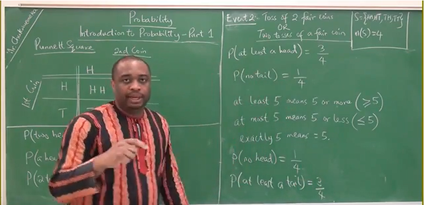

Welcome to Probability
I greet you this day,
First: read the notes.
Second: view the videos.
Third: solve the questions/solved examples.
Fourth: check your solutions with my thoroughly-explained solutions.
Comments, ideas, areas of improvement, questions, and constructive criticisms are welcome. You may
contact me.
If you are my student, please do not contact me here. Contact me via the school's system. Thank you for
visiting!!!
Samuel Dominic Chukwuemeka (Samdom For Peace) B.Eng., A.A.T, M.Ed., M.S
Objectives
Students will:
(1.) Discuss the meaning of probability.
(2.) Determine the probability of an event.
(3.) Compute the probabilities of events using the classical method.
(4.) Compute the probabilities of events using the empirical method.
(5.) Discuss scenarios related to probability including coins, dice, and cards among others.
(6.) Discuss the role of probability in life decisions including marriage among others.
(7.) Illustrate the sample spaces of events using probability tree diagrams.
(8.) Illustrate the sample spaces of events using Punnett squares.
(9.) Interpret the probabilities of events.
(10.) Determine the odds in favor of an event.
(11.) Determine the odds against an event.
(12.) Discuss the types of events.
(13.) Apply the rules of probability.
(14.) Solve applied problems involving probability.
(15.) Discuss conditional probability.
(16.) Solve applied problems involving conditional probability.
(17.) Discuss Bayes' theorem.
Mathematicians who did extensive work on Probability
(1.) Gregor Mendel : Mendelian Laws of Genetics : Roman Catholic Monk : Austrian
(2.) Reverend Thomas Bayes : Bayes Theorem/Conditional Probability : British
(3.) Reginald Punnett : Punnett Square : British
(4.) Girolamo Cardano : Italian
(5.) Pafnuty Chebyshev : Chebyshev's Theorem : Russian
(6.) Andrey Markov : Markov Chain : Russian
(7.) Andrey Kolmogorov : Russian
(8.) Pierre de Fermat : France
(9.) Pierre Simon de Laplace : France
(10.) Blaise Pascal : France
***Honorable Mention : Evang. Samuel Dominic Chukwuemeka (SamDom For Peace) : The Humble Teacher
Okay, great people - please let me know whether I taught this topic well.
Did you learn anything from me? ☺☺☺
Scenarios Related to Probability / Vocabulary Words
Bring it to English Language: probably, chance, odds, odds of winning, odds of losing, placing
bets,
gambling, sweepstakes, raffle tickets, door prizes, cards, coins, dice, result, success, failure,
events,
set, dependent, independent, possible, impossible, odds, odds in favor, odds against,
Bring it to Science: phenomenon, random, experiment, outcome, theoretical, classical, empirical,
theorem, rule, law,
Bring it to Mathematics: probability, sample space, event space, mutually exclusive, mutually
inclusive,
inclusive, with replacement, without replacement, addition law, multiplication law, inequality
Check for Prior Knowledge
Ask students to list all the ways/terms/scenarios in which they have used the word,
Probability or any word associated with Probability
(1.) Religion/Christianity: The probability that JESUS CHRIST will come again to judge all
mankind is 100%$ (1).
(2.) Meteorology: The National Weather Service predicted a
70% chance of precipitation in Peachtree City, GA on the Saturday
night of 3rd February, 2018.
(3.) Gambling/Gaming: What are the odds in favor of winning the Powerball lottery?
(4.) Gambling/Gaming: What are the odds against winning the Mega Milions lottery?
(5.) Biology: The probability of seeing a chair that gives birth to a human being is
0% (0).
(6.) Statistics: It is generally known that one with a higher degree will earn more than another
with a lower degree or no degree at all.
According to the Bureau of Labor Statistics, one of the reasons for varying wages is Credentials.
What is the probability that a randomly selected resident of the State of New Hampshire earns
more than the minimum income for middle class according to
CNBC given that the person has an advanced degree?
Did you notice the underlined, "given that"? What is the probability that an event will occur given that
a prior event occurred?
This is known as Conditional Probability.
(7.) Criminology: Have you heard of a: true positive? true negative?
false positive? false negative?
Is it possible for someone who is drug-free to test positive for drug-use? - Of course, it is possible.
Remember we are humans. Science helps us to avoid mistakes. With the advancement of science and
technology, the "probability" of making those mistakes are small.
But, we still make mistakes because we are humans. We have limitations. Do you see another reason of
using "probability"?
Is it also possible for someone who uses drugs to test negative for drug-use? - Of course, it is also
possible.
and much more scenarios ...
Introduction
Let us define and explain several terms that we shall use in this topic.
Deterministic Phenomenon: is a phenomenon that you can predict the outcome based on the
information you know.
For example: Assume you went to the Walmart store at a certain location to buy oranges.
Say the oranges were marked at $\$2.00$ per pound.
If you want to purchase $6$ pounds of oranges, how much would you pay?
Random Phenomenon: is a phenomenon that you cannot predict the outcome.
These include: the toss of a fair die, the pick of the winning numbers of a lottery ticket, and the
toss of a fair coin among others.
Random Experiment: is the observation or measurement of a random phenomenon.
For example: forecasting the probability of earthquakes by observing the periods of occurrence, etc.
A computer or some type of randomizing device is used to help achieve randomness.
Computer-generated random numbers are also known as pseudo-random numbers because they are generated by
a seed value that starts the random sequence.
Outcome: is the result of an experiment.
Success: is a favorable outcome.
Assume you want to get a head whenever you toss a coin.
If you toss a coin and get a head, then it is success.
If you toss a coin and get a tail, then it is failure.
Failure: is an unfavorable outcome.
Sample Space: is the set of all possible outcomes of a random experiment.
It is generally denoted by $S$
Event Space: is a subset of the sample space which is also a set of some of all outcomes.
It is the set of the outcomes we want to find.
It is generally denoted by $E$
Events: We have five main types of events in Probability.
(1.) Dependent Events
(2.) Independent Events
(3.) Mutually Exclusive Events
(4.) Mutually Inclusive Events
(5.) Complementary Events
Please click on the "Events" link on the Left Hand Side ($LHS$) for further explanations.
Probability: of an event is the measure of the likelihood of the event.
OR
Probability: of an event is the measure of the success of the event.
The probability of an event can be expressed as a fraction, decimal, or
percent.
$20\%$ chance or rain means that the probability that rain will fall is:
$20\%$ OR $\dfrac{20}{100} = \dfrac{1}{5}$ OR $\dfrac{20}{100} = 0.2$
So, $P(raining) = \dfrac{1}{5} \:\:or\:\: 0.2 \:\:or\:\: 20\%$
The Inequality Range: is $0 \le P(E) \le 1$
The probability of an impossible event (an event that will never happen) is $0$
The probability of a sure event (an event that must happen) is $1$
Therefore, the probability of any event is from $0$ through $1$
$0$ and $1$ are the two extremes for the probability of an event.
This means that if you are asked to calculate the probability of any event; if your answer is less
than $0$ or greater than $1$, then it is incorrect.
We can classify Probability as:
(1.) Theoretical or Classical Probability
(2.) Empirical or Experimental Probability
Theoretical or Classical Probability: is the probability of an event in which each outcome of the
event has an equal likelihood of occurrence.
It is not based on an experiment.
It is based on the relative frequency at which an event happens after infinitely many repetitions.
The probability of an event, say $E$ is generally denoted by $P(E)$
$
P(E) = \dfrac{number\:\: of\:\: required\:\: outcomes}{number\:\: of\:\: possible\:\: outcomes} \\[5ex]
\rightarrow P(E) = \dfrac{cardinality\:\: of\:\: event\:\: space}{cardinality\:\: of\:\: sample\:\:
space} \\[5ex]
\rightarrow P(E) = \dfrac{n(E)}{n(S)}
$
NOTE:
For most calculations involving probabilities, it is recommended that you do not simplify until the
final answer.
Please explain the examples/cases where this recommendation is needed...cases of
with replacement and without replacement conditions, addition rule, etc.
Example 1: JAMB A man kept 6 black, 5 brown, and 7 purple shirts in a drawer.
What is the probability of his picking a purple shirt with his eyes closed?
$
A.\:\: \dfrac{1}{7} \\[5ex]
B.\:\: \dfrac{11}{18} \\[5ex]
C.\:\: \dfrac{7}{18} \\[5ex]
D.\:\: \dfrac{7}{11}
$
$ \underline{Define\:\:variables} \\[3ex] Let: \\[3ex] black = B \\[3ex] brown = R \\[3ex] purple = P \\[3ex] \underline{Write\:\:the\:\:cardinalities} \\[3ex] n(B) = 6 \\[3ex] n(R) = 5 \\[3ex] n(P) = 7 \\[3ex] n(S) = 6 + 5 + 7 = 18 \\[3ex] \underline{Use\:\:Formula\:\:to\:\:find\:\:the \:\:Probability} \\[3ex] P(P) = \dfrac{n(P)}{n(S)} \\[5ex] P(P) = \dfrac{7}{18} $
Example 2: JAMB Find the probability that a number selected at random from 40 to
50 is a prime.
$
A.\:\: \dfrac{3}{11} \\[5ex]
B.\:\: \dfrac{5}{11} \\[5ex]
C.\:\: \dfrac{3}{10} \\[5ex]
D.\:\: \dfrac{4}{11}
$
Recall: What are prime numbers?
$ \underline{Define\:\:variable} \\[3ex] Let: \\[3ex] event\:\:of\:\:selecting\:\:a\:\:prime\:\:number\:\:from\:\:40-50 = E \\[3ex] \underline{List\:\:elements\:\:of\:\:the\:\:Sample\:\:Space\:\:and\:\:the\:\:Event\:\:space} \\[3ex] S = \{40, 41, 42, 43, 44, 45, 46, 47, 48, 49, 50\} \\[3ex] E = \{41, 43, 47\} \\[3ex] \underline{Write\:\:the\:\:cardinalities} \\[3ex] n(S) = 11 \\[3ex] n(E) = 3 \\[3ex] \underline{Use\:\:Formula\:\:to\:\:find\:\:the \:\:Probability} \\[3ex] P(E) = \dfrac{n(E)}{n(S)} \\[5ex] P(P) = \dfrac{3}{11} $
Example 3: Bring it to Geometry JAMB Find the probability of selecting a figure which
is parallelogram from a square, a rectangle, a rhombus, a kite and a trapezium.
$
A.\:\: \dfrac{3}{5} \\[5ex]
B.\:\: \dfrac{2}{5} \\[5ex]
C.\:\: \dfrac{4}{5} \\[5ex]
D.\:\: \dfrac{1}{5}
$
Recall: From Geometry:
(1.) All Squares are Parallelograms but NOT all Parallelograms are Squares.
This means that we can always get a parallelogram from a square because all squares are parallelograms
(2.) All Rectangles are Parallelograms but NOT all Parallelograms are Rectangles.
So, we can get a parallelogram from a rectangle because all rectangles are parallelograms
(3.) All Rhombi are Parallelograms but all Parallelograms are NOT Rhombi.
Therefore, we can get a parallelogram from a rhombus because all rhombi are parallelograms
(4.) Kites are NOT Parallelograms.
So, we cannot get a parallelogram from a kite because kites are not parallelograms
(5.) Trapeziums are NOT Parallelograms.
In that sense, we cannot get a parallelogram from a trapezium because trapeziums are not parallelograms
$ \underline{Define\:\:variable} \\[3ex] Let: \\[3ex] event\:\:of\:\:selecting\:\:a\:\:parallelogram\:\:from\:\:those\:\:shapes = E \\[3ex] \underline{List\:\:elements\:\:of\:\:the\:\:Sample\:\:Space\:\:and\:\:the\:\:Event\:\:space} \\[3ex] S = \{Square, Rectangle, Rhombus, Kite, Trapezium\} \\[3ex] E = \{Square, Rectangle, Rhombus\} \\[3ex] \underline{Write\:\:the\:\:cardinalities} \\[3ex] n(S) = 5 \\[3ex] n(E) = 3 \\[3ex] \underline{Use\:\:Formula\:\:to\:\:find\:\:the \:\:Probability} \\[3ex] P(E) = \dfrac{n(E)}{n(S)} \\[5ex] P(P) = \dfrac{3}{5} $
Empirical or Experimental Probability: is the probability of an event in which each outcome of
the event does not have an equal likelihood of occurrence.
It is based on short-run relative frequencies.
Experiments are needed.
The experiments used to produce empirical probabilities are known as simulations.
$
P(E) = \dfrac{number\:\: of\:\: times\:\: the\:\: event\:\: occurred}{number\:\: of\:\: times\:\:
the\:\: experiment\:\: was\:\: performed}
$
Simulations: are the experiments used to produce empirical probabilities.
When using a similation tom estimate a probability, it is recommended that at least 100 trials
be done.
The Law of Large Numbers states that if an experiment with a random outcome is repeated a
large numberof times, the empirical probability of an event is likely to be close to the true
probability.
This implies that the larger the number of repetitions, the closer the empirical probability is
to the true probability.
A Fair Die: is a die in which all the outcomes are equally likely.
A Loaded Die: is a die in which a certain outcome/some certain outcomes is/are more likely.
All the outcomes are not equally likely.
Tests
In testing for marijuana and for most applicable tests:
(1.) A False Positive means that the applicant did not use it but tested positive for
it.
Some examples of false positive tests and the causes are found here: here - by WebMD
(2.) A False Negative means that the applicant used it but tested negative for it.
(3.) A True Positive means that the applicant used it and tested positive for it.
(4.) A True Negative means that the applicant did not use it and tested negative for
it.
Inequalities Used/Terms Used
(1.) At least $5$ means $\ge 5$
It means that the minimum should be $5$
(2.) At most $5$ means $\le 5$
It means that the maximum should be $5$
(3.) Just $5$ means $= 5$
It means exactly $5$ or equal to $5$
(4.) More than $5$ means $\gt 5$
(5.) Less than $5$ means $\lt 5$
(6.) No more than $5$ means $\le 5$
It should not be more than $5$
It means $5$ or less
(7.) No less than $5$ means $\ge 5$
It should not be less than $5$
It means $5$ or more
Independent Events
Two events are independent if the probability of one event does not affect the probability of the
other event.
For example: Say a bag contains $5$ red marbles, $3$ green marbles, and $4$ blue marbles.
Let:
$
Red = R \\[3ex]
Green = G \\[3ex]
Blue = B \\[3ex]
n(R) = 5 \\[3ex]
n(G) = 3 \\[3ex]
n(B) = 4 \\[3ex]
S = \{5R, 3G, 4B\} \\[3ex]
n(S) = 5 + 3 + 4 = 12 \\[3ex]
$
Event A: Samuel draws a marble from the bag.
It is a blue marble.
He does not like blue marbles.
So, he puts the marble back into the bag ... "With Replacement" condition
$
P(B) = \dfrac{n(B)}{n(S)} = \dfrac{4}{12} = \dfrac{1}{3} \\[5ex]
$
Event B: Samuel draws another marble from the bag.
It is a green marble.
$
P(G) = \dfrac{n(G)}{n(S)} = \dfrac{3}{12} = \dfrac{1}{4} \\[5ex]
$
We see that Events $A$ and $B$ are independent.
The probability of event $B$ occurring is not affected in any way by the probability of the occurrence
of event $A$.
This is because of the With Replacement condition.
Samuel put that first pick back into the bag. So, all the marbles are complete prior to the second pick.
Dependent Events
Two events are dependent if the probability of one event affects the probability of the
other event.
For example: Say a bag contains $5$ red marbles, $3$ green marbles, and $4$ blue marbles.
Let:
$
Red = R \\[3ex]
Green = G \\[3ex]
Blue = B \\[3ex]
n(R) = 5 \\[3ex]
n(G) = 3 \\[3ex]
n(B) = 4 \\[3ex]
S = \{5R, 3G, 4B\} \\[3ex]
n(S) = 5 + 3 + 4 = 12 \\[3ex]
$
Event C: Samuel draws a marble from the bag.
It is a blue marble.
He does not like blue marbles.
However, rather than putting it back into the bag, he throws the marble away.
So, the sample space has been affected. $n(S) = 11$ rather than $12$
This is because he threw the marble away ... "Without Replacement" condition
Event D: Samuel draws another marble from the bag.
It is a green marble.
$
P(B) = \dfrac{n(B)}{n(S)} = \dfrac{4}{12} = \dfrac{1}{3} \\[5ex]
Without\:\: Replacement \\[3ex]
S = \{5R, 3G, 3B\} \\[3ex]
n(S) = 5 + 3 + 3 = 11 \\[3ex]
P(G) = \dfrac{n(G)}{n(S)} = \dfrac{3}{11} \\[5ex]
$
We see that the probability of picking a green marble was affected by the probability that a blue marble
was picked earlier.
The event of picking the blue marble resulted in the decision to throw it away.
Throwing it away affects the sample space, and hence any other event/pick
Event $D$ was dependent on Event $C$
Events $C$ and $D$ are dependent events.
This is because of the Without Replacement condition.
Samuel did not replace the first pick. So, a marble was missing prior to the second pick.
Are there situations where we treat dependent events as independent events?
Yes.
It is known as the $\boldsymbol{5\%}$ Guideline for Treating Dependent Events as Independent
Events
It states that: If the sample size is no more than (less than or equal to) $5\%$ of the population size,
treat the
selections as being independent.
$n \le 0.05N$
Example 1: JAMB A bag contains $4$ white balls and $6$ red balls.
Two balls are taken from the bag without replacement.
What is the probability that they are both red?
$
A.\:\: \dfrac{1}{3} \\[5ex]
B.\:\: \dfrac{2}{9} \\[5ex]
C.\:\: \dfrac{2}{15} \\[5ex]
D.\:\: \dfrac{1}{5} \\[5ex]
E.\:\: \dfrac{3}{5}
$
$ Let\:\: red = R \\[3ex] n(R) = 6 \\[3ex] white = W \\[3ex] n(W) = 4 \\[3ex] n(S) = 6 + 4 = 10 \\[3ex] P(R) = \dfrac{n(R)}{n(S)} \\[5ex] P(R) = \dfrac{6}{10} \\[5ex] Two\:\:marbles\:\:picked \\[3ex] Without\:\:replacement\:\:condition \\[3ex] P(RR) = \dfrac{6}{10} * \dfrac{5}{9} \\[5ex] P(RR) = \dfrac{1}{3} $
Mutually Exclusive Events
Two events are mutually exclusive if they cannot occur at the same time.
The events are also said to be disjoint events
For example: In a single toss of a fair coin; the event of having a head, say Event $E$ and the
event of having a tail, say Event $F$ at the same time are mutually exclusive.
In a single toss of a fair coin, one can either get a head or a tail, but not both.
Recall this topic in Logic:
XOR - Exclusive OR (Either or but not both)
For Mutually Exclusive Events, $P(E \cap F) = 0$
Mutually Inclusive Events
Two events are mutually inclusive if they can occur at the same time.
For example: In a single toss of a fair die; the event of having an odd number, say Event $G$ and
the
event of having a prime number, say Event $H$ at the same time are mutually inclusive.
Complementary Events
Two events are complementary if one event is the complement or prime of the other event.
The sum of the probabilities of an event and it's complement is $1$
The complement of an event, say $J$ is denoted by $J^c$ or $J'$
Let us review some examples.
| Event $J$ | Complement of Event $J$ is $J'$ or $J^c$ |
|---|---|
| John will play the piano | John will not play the piano |
| The couple will have at least 1 girl | The couple will have no girl (all boys) |
| The couple will have at least 2 boys | The couple will have less than 2 boys |
| The couple will have at most 3 boys | The couple will have more than 3 boys |
Odds of an Event
The Odds of an Event is the ratio of the number of ways the event can occur to the number of
ways the event cannot occur.
$
Odds\:\:of\:\:an\:\:event =
\dfrac{number\:\:of\:\:favorable\:\:outcomes}{number\:\:of\:\:unfavorable\:\:outcomes} \\[5ex]
$
The odds of an event can be in favor of the event occurring, or against the event occurring.
$
Odds\:\:in\:\:favor =
\dfrac{probability\:\:that\:\:event\:\:will\:\:occur}{probability\:\:that\:\:event\:\:will\:\:not\:\:occur}
= \dfrac{P(E)}{P(E')} \\[5ex]
P(E) = \dfrac{n(E)}{n(S)} \\[5ex]
P(E') = \dfrac{n(E')}{n(S)} \\[5ex]
\rightarrow Odds\:\:in\:\:favor = P(E) \div P(E') \\[3ex]
Odds\:\:in\:\:favor = \dfrac{n(E)}{n(S)} \div \dfrac{n(E')}{n(S)} \\[5ex]
Odds\:\:in\:\:favor = \dfrac{n(E)}{n(S)} * \dfrac{n(S)}{n(E')} \\[5ex]
\rightarrow Odds\:\:in\:\:favor = \dfrac{n(E)}{n(E')} \\[5ex]
Odds\:\:against =
\dfrac{probability\:\:that\:\:event\:\:will\:\:not\:\:occur}{probability\:\:that\:\:event\:\:will\:\:occur}
= \dfrac{P(E')}{P(E)} \\[5ex]
\rightarrow Odds\:\:against = P(E') \div P(E) \\[3ex]
Odds\:\:against = \dfrac{n(E')}{n(S)} \div \dfrac{n(E)}{n(S)} \\[5ex]
Odds\:\:against = \dfrac{n(E')}{n(S)} * \dfrac{n(S)}{n(E)} \\[5ex]
\rightarrow Odds\:\:against = \dfrac{n(E')}{n(E)}
$
Usual and Unusual Events
In general; if the probability of an event is at least $5\%$ ($0.05$ or more), the event is usual.
In general (but depending on the situation); if the probability of an event is less than $5\%$ (less
than $0.05$), the event is
unusual.
What situation does this depend?
For example: In a life and death situation where a defendant is to be sentenced if guilty or released if
innocent;
the jurors need to be $\underline{100\%}$ certain of any decision they make. If the jurors are
$96\%$ certain
that the defendant is guilty, this means that the probability that the defendant is not guilty is $4\%$
(less than
$5\%$). According to the $5\%$ rule, this implies that it is not usual that the defendant is not guilty.
But, what if the defendant is innocent? In this case that involves life or death, the event is not
unusual.
LIFE IS PRECIOUS!!!
Multiplication Rule
Multiplication Rule goes with AND
Say we have two events: Event $A$ and Event $B$; what is the probability that both Event $A$ and
Event $B$ occur?
Notice the "and"
The Multiplication Rule of Probability states that: Given two events, say Event $A$ and Event
$B$;
the probability that both event $A$ AND event $B$ occur is equal to the product of the
individual probabilities of their occurrences.
$
P(A\:\:\:AND\:\:\:B) = P(A) * P(B|A) \\[3ex]
P(A \cap B) = P(A) * P(B|A) \\[3ex]
P(A\:\:\:AND\:\:\:B) = P(A \cap B) \\[3ex]
$
$P(B|A)$ is read as: the probability of event $B$ given event $A$
For Independent Events
$
P(B|A) = P(B) \\[3ex]
\rightarrow P(A\:\:\:AND\:\:\:B) = P(A) * P(B) \\[3ex]
$
For Dependent Events
$
P(B|A) = P(B|A) \\[3ex]
\rightarrow P(A\:\:\:AND\:\:\:B) = P(A) * P(B|A)
$
Example 1: ACT The probabilities that each of 2 independent events will occur are given in the table below.
| Event | Probability |
|---|---|
|
A $0.20$ |
B $0.40$ |
What is the probability that both Events $A$ and $B$ will occur - that is, $P(A\:\:and\:\:B)$ ?
$
F.\:\: 0.08 \\[3ex]
G.\:\: 0.20 \\[3ex]
H.\:\: 0.30 \\[3ex]
J.\:\: 0.50 \\[3ex]
K.\:\: 0.60
$
$ P(A\:\:\:AND\:\:\:B) = P(A) * P(B) ...Multiplication\:\:Rule\:\:for\:\:Independent\:\:Events \\[3ex] P(A\:\:\:AND\:\:\:B) = 0.20(0.40) \\[3ex] P(A\:\:\:AND\:\:\:B) = 0.08 $
Addition Rule
Addition Rule goes with OR
Say we have two events: Event $A$ and Event $B$; what is the probability that either Event $A$ or
Event $B$ occurs?
Notice the "or"
The Addition Rule of Probability states that: Given two events, say Event $A$ and Event $B$;
the probability that event $A$ OR event $B$ occur is equal to the probability that event $A$
occurs plus the probability that event $B$ occurs minus the probability that both events $A$ and $B$
occur.
Recall:
Based on the Definition of the union of two sets say set $A$ and set $B$;
Do you see the relationship between Sets and Probability
We are using our knowledge of Sets on Probability
$n(A \cup B) = n(A) + n(B) - n(A \cap B)$
Bring it to Probability
Divide each term by $n(S)$
$
\dfrac{n(A \cup B)}{n(S)} = \dfrac{n(A)}{n(S)} + \dfrac{n(B)}{n(S)} - \dfrac{n(A \cap B)}{n(S)} \\[5ex]
P(A \cup B) = P(A) + P(B) - P(A \cap B) \\[3ex]
P(A\:\:\:OR\:\:\:B) = P(A) + P(B) - P(A\:\:\:AND\:\:\:B) \\[3ex]
$
For Independent Events
$
P(B|A) = P(B) \\[3ex]
\rightarrow P(A\:\:\:OR\:\:\:B) = P(A) + P(B) - [P(A) * P(B)] \\[3ex]
$
For Dependent Events
$
P(B|A) = P(B|A) \\[3ex]
\rightarrow P(A\:\:\:OR\:\:\:B) = P(A) + P(B) - [P(A) * P(B|A)] \\[3ex]
$
For Mutually Exclusive Events (Disjoint Events)
$
P(A \cap B) = 0 \\[3ex]
P(A\:\:\:OR\:\:\:B) = P(A) + P(B) - 0 \\[3ex]
\rightarrow P(A\:\:\:OR\:\:\:B) = P(A) + P(B)
$
Example 1: ACT The probability that Event A will occur is 0.2
The probability that Event B will occur is 0.6
Given that Events A and B are mutually exclusive, what is the probability that Event
A OR
Event B will occur?
$
F.\:\: 0.12 \\[3ex]
G.\:\: 0.2 \\[3ex]
H.\:\: 0.3 \\[3ex]
J.\:\: 0.4 \\[3ex]
K.\:\: 0.8
$
$ P(A\:\:\:OR\:\:\:B) = P(A) + P(B)...Addition\:\:Rule\:\:for\:\:Mutually\:\:Exclusive\:\:Events \\[3ex] P(A\:\:\:OR\:\:\:B) = P(A) + P(B) \\[3ex] P(A\:\:\:OR\:\:\:B) = 0.2 + 0.6 \\[3ex] P(A\:\:\:OR\:\:\:B) = 0.8 $
Complementary Rule
Complementary Rule applies only to Complementary Events
Say we have an events: Event $A$
The complement of Event $A$ is $A'$
$
P(A) + P(A') = 1 \\[3ex]
\rightarrow P(A') = 1 - P(A)
$
Example 1: ACT If it rains in Franklin City on a particular day, the probability that
it will rain there the following day is 0.70
If it does not rain in Franklin City on a particular day, the probability that it will rain there the
following day is 0.10
Given that it rained in Franklin City on Monday, what is the probability that it will NOT rain in
Franklin City on Tuesday of the same week?
$
F.\:\: 0.10 \\[3ex]
G.\:\: 0.30 \\[3ex]
H.\:\: 0.60 \\[3ex]
J.\:\: 0.70 \\[3ex]
K.\:\: 0.90
$
It rained in Franklin City on Monday
The probability that it will rain there on Tuesday (the following day) is $0.70$
Let $T$ be the event that it will rain on Tuesday
This implies that $T'$ is the event that it will not rain on Tuesday... this is what we are asked to find
$ P(T) = 0.70 \\[3ex] P(T) + P(T') = 1 ...Complementary\:\:Rule \\[3ex] P(T') = 1 - P(T) \\[3ex] P(T') = 1 - 0.70 \\[3ex] P(T') = 0.30 $
Example 2: ACT A bag contains exactly 18 solid-colored buttons: 3 red, 5 blue,
and 10 white.
What is the probability of randomly selecting 1 button that is NOT white?
$
F.\:\: \dfrac{1}{18} \\[5ex]
G.\:\: \dfrac{1}{8} \\[5ex]
H.\:\: \dfrac{4}{9} \\[5ex]
J.\:\: \dfrac{2}{3} \\[5ex]
K.\:\: \dfrac{4}{5}
$
We can solve this in at least two ways
Choose whatever approach you prefer
$ Let: \\[3ex] red = R \\[3ex] blue = B \\[3ex] white = W \\[3ex] S = \{3R, 5B, 10W\} \\[3ex] n(S) = 3 + 5 + 10 = 18 \\[5ex] \underline{First\:\: Method: Quantitative\:\: Reasoning} \\[3ex] NOT\:\:White \implies R\:\:AND\:\:B \\[3ex] n(R) = 3 \\[3ex] n(B) = 5 \\[3ex] n(R\:\:AND\:\:B) = 3 + 5 = 8 \\[3ex] P(NOT\:\:White) = P(R\:\:AND\:\:B) = \dfrac{n(R\:\:AND\:\:B)}{n(S)} \\[5ex] P(NOT\:\:White) = \dfrac{8}{18} \\[5ex] P(NOT\:\:White) = \dfrac{4}{9} \\[5ex] \underline{Second\:\: Method: Complementary\:\:Rule} \\[3ex] NOT\:\:white = W' \\[3ex] P(White) + P(NOT\:\:White) = 1 ... Complementary\:\: Rule \\[3ex] P(W) + P(W') = 1 \\[3ex] n(W) = 10 \\[3ex] P(W) = \dfrac{n(W)}{n(S)} = \dfrac{10}{18} \\[5ex] P(W') = 1 - P(W) \\[3ex] P(W') = 1 - \dfrac{10}{18} \\[5ex] P(W') = \dfrac{18}{18} - \dfrac{10}{18} \\[5ex] P(W') = \dfrac{18 - 10}{18} \\[5ex] P(W') = \dfrac{8}{18} \\[5ex] P(W') = \dfrac{4}{9} $
Rare Event Rule
The Rare Event Rule states that if under a given assumption, the probability of a particular observed event is extremely small (less than $5\%$), then the assumption is probably not correct.
Coins
A fair coin has two faces: the head, $H$ and the tail, $T$
Case 1: A fair coin tossed one time
$
S = \{H, T\} \\[3ex]
n(S) = 2
$
Case 2: A fair coin tossed two times (twice) OR Two fair coins tossed one time
Used: Punnett Square
|
$2^{nd}\:\:Coin\:\:\rightarrow$ $1^{st}\:\:Coin\:\:\downarrow$ |
$H$ | $T$ |
|---|---|---|
| $H$ | $HH$ | $HT$ |
| $T$ | $TH$ | $TT$ |
$ S = \{HH, HT, TH, TT\} \\[3ex] n(S) = 4 $
Case 3: A fair coin tossed three times (thrice) OR Three fair coins tossed one time
Used: Punnett Square
Two tables will be used in this case.
Use any table you prefer.
First Table: $1$ coin in the Column and $2$ coins in the Row
Second Table: $2$ coins in the Column and $1$ coin in the Row
|
$2\:\:Coins\:\:\rightarrow$ $1\:\:Coin\:\:\downarrow$ |
$HH$ | $HT$ | $TH$ | $TT$ |
|---|---|---|---|---|
| $H$ | $HHH$ | $HHT$ | $HTH$ | $HTT$ |
| $T$ | $THH$ | $THT$ | $TTH$ | $TTT$ |
$ S = \{HHH, HHT, HTH, HTT, THH, THT, TTH, TTT\} \\[3ex] n(S) = 8 $
|
$1\:\:Coin\:\:\rightarrow$ $2\:\:Coins\:\:\downarrow$ |
$H$ | $T$ |
|---|---|---|
| $HH$ | $HHH$ | $HHT$ |
| $HT$ | $HTH$ | $HTT$ |
| $TH$ | $THH$ | $THT$ |
| $TT$ | $TTH$ | $TTT$ |
$ S = \{HHH, HHT, HTH, HTT, THH, THT, TTH, TTT\} \\[3ex] n(S) = 8 $
Case 4: A fair coin tossed four times (quadruple) OR Four fair coins tossed one time
Ask students to draw the Punnett Square or the Tree Diagram for this case
Review their tables and give guidance as appropriate
Ask them to write the set and the cardinality of the set of outcomes for this case.
Example 1: Four fair coins are tossed once.
(a.) Draw a Punnett Square or a Tree Diagram to list all the outcomes of this experiment.
(b.) List the sample space.
(c.) Write the cardinality of the sample space.
Used: Punnett Square
(a.)
|
$2\:\:Coins\:\:\rightarrow$ $2\:\:Coins\:\:\downarrow$ |
$HH$ | $HT$ | $TH$ | $TT$ |
|---|---|---|---|---|
| $HH$ | $HHHH$ | $HHHT$ | $HHTH$ | $HHTT$ |
| $HT$ | $HTHH$ | $HTHT$ | $HTTH$ | $HTTT$ |
| $TH$ | $THHH$ | $THHT$ | $THTH$ | $THTT$ |
| $TT$ | $TTHH$ | $TTHT$ | $TTTH$ | $TTTT$ |
$ (b.) \\[3ex] S = \{ \\[3ex] HHHH, HHHT, HHTH, HHTT, \\[3ex] HTHH, HTHT, HTTH, HTTT, \\[3ex] THHH, THHT, THTH, THTT, \\[3ex] TTHH, TTHT, TTTH, TTTT \\[3ex] \} \\[3ex] (c.) \\[3ex] n(S) = 16 $
Student: Why do we need to draw these cases?
Teacher: Good question.
Depending on the question, we shall use the appropriate table.
Let us do some examples.
Example 2: JAMB If two fair coins are tossed, what is the probability of getting at
least one head?
$
A.\:\: \dfrac{1}{4} \\[5ex]
B.\:\: \dfrac{1}{2} \\[5ex]
C.\:\: 1 \\[3ex]
D.\:\: \dfrac{2}{3} \\[5ex]
E.\:\: \dfrac{3}{4}
$
We shall use Case 2: A fair coin tossed two times (twice) OR Two fair coins tossed one time
At least $1$ means $\ge 1$
Let $E$ be the event of obtaining at least one head in a single toss of two fair coins
$ S = \{HH, HT, TH, TT\} \\[3ex] n(S) = 4 \\[3ex] E = \{HH, HT, TH\} \\[3ex] n(E) = 3 \\[3ex] P(E) = \dfrac{n(E)}{n(S)} \\[5ex] P(E) = \dfrac{3}{4} $
Example 3: ACT In $3$ fair coin tosses, what is the probability of obtaining exactly
$2$ tails?
(Note: In a fair coin toss the $2$ outcomes, heads and tails, are equally likely.)
$
F.\:\: \dfrac{1}{3} \\[5ex]
G.\:\: \dfrac{3}{8} \\[5ex]
H.\:\: \dfrac{1}{2} \\[5ex]
J.\:\: \dfrac{2}{3} \\[5ex]
K.\:\: \dfrac{7}{8}
$
We shall use Case 3: A fair coin tossed three times (thrice) OR Three fair coins tossed one time
Let $E$ be the event of obtaining exactly two tails in a single toss of three fair coins
$ S = \{HHH, HHT, HTH, HTT, THH, THT, TTH, TTT\} \\[3ex] n(S) = 8 \\[3ex] E = \{HTT, THT, TTH\} \\[3ex] n(E) = 3 \\[3ex] n(S) = 8 \\[3ex] P(E) = \dfrac{n(E)}{n(S)} \\[5ex] P(E) = \dfrac{3}{8} $
Dice
A fair die has faces numbered $1, 2, 3, 4, 5, 6$
Case 1: A fair die tossed one time
$
S = \{1, 2, 3, 4, 5, 6\} \\[3ex]
n(S) = 6
$
Example 1: A single die is rolled one time.
Determine the probability of obtaining an odd number.
$ S = \{1, 2, 3, 4, 5, 6\} \\[3ex] n(S) = 6 \\[3ex] Let\:\:A\:\:be\:\:the\:\:event\:\:of\:\:picking\:\:an\:\:odd\:\:number \\[3ex] A = \{1, 3, 5\} \\[3ex] n(A) = 3 \\[3ex] P(A) = \dfrac{n(A)}{n(S)} \\[5ex] P(A) = \dfrac{3}{6} \\[5ex] P(A) = \dfrac{1}{2} \\[5ex] $ The probability of picking an odd number when a fair die is tossed one time is $\dfrac{1}{2}$ (one-half)
Example 2: A single die is rolled one time.
Determine the probability of obtaining a number less than $5$
$ S = \{1, 2, 3, 4, 5, 6\} \\[3ex] n(S) = 6 \\[3ex] Let\:\:B\:\:be\:\:the\:\:event\:\:of\:\:picking\:\:a\:\:number\:\:less\:\:than\:\:5 \\[3ex] B = \{1, 2, 3, 4\} \\[3ex] n(B) = 4 \\[3ex] P(B) = \dfrac{n(B)}{n(S)} \\[5ex] P(B) = \dfrac{4}{6} \\[5ex] P(B) = \dfrac{2}{3} \\[5ex] $ In a single toss of a fair die, there is a $\dfrac{2}{3}$ (a two-third) probability of picking a number less than $5$
Example 3: A single die is rolled one time.
Determine the probability of obtaining an odd number OR a number less than $5$
We can solve this question in two ways - By Definition and by the Addition Rule
Ask students to solve the question.
Most or all of them would just solve it by the definition of Probability - Quantitative Reasoning.
You may introduce the Addition Rule concept to students here or you may wait till you have taught the concept.
However, whatever you choose to do, please ask them to watch out for the keyword, OR
After you teach the Addition Rule concept, it should be recommended going forward.
This is because some students make the mistake of counting twice in cases of OR
$ \underline{First\:\: Method: Quantitative\:\: Reasoning} \\[3ex] OR\:\:could\:\:go\:\:either\:\:way \\[3ex] S = \{1, 2, 3, 4, 5, 6\} \\[3ex] n(S) = 6 \\[3ex] Let\:\:C\:\:be\:\:the\:\:event\:\:of\:\:picking\:\:an\:\:odd\:\:number\:\:OR\:\:a\:\:number\:\:less\:\:than\:\:5 \\[3ex] C = \{1, 2, 3, 4, 5\} \\[3ex] n(C) = 5 \\[3ex] P(C) = \dfrac{n(C)}{n(S)} \\[5ex] P(C) = \dfrac{5}{6} \\[5ex] \underline{Second\:\:Method - By\:\:Addition\:\:Rule} \\[3ex] OR \implies \cup \\[3ex] AND \implies \cap \\[3ex] S = \{1, 2, 3, 4, 5, 6\} \\[3ex] n(S) = 6 \\[3ex] Let\:\:A\:\:be\:\:the\:\:event\:\:of\:\:picking\:\:an\:\:odd\:\:number \\[3ex] A = \{1, 3, 5\} \\[3ex] n(A) = 3 \\[3ex] P(A) = \dfrac{n(A)}{n(S)} = \dfrac{3}{6} \\[5ex] Let\:\:B\:\:be\:\:the\:\:event\:\:of\:\:picking\:\:a\:\:number\:\:less\:\:than\:\:5 \\[3ex] B = \{1, 2, 3, 4\} \\[3ex] n(B) = 4 \\[3ex] P(B) = \dfrac{n(B)}{n(S)} = \dfrac{4}{6} \\[5ex] A \cap B = \{1, 3\} \\[3ex] n(A \cap B) = 2 \\[3ex] P(A \cap B) = \dfrac{n(A \cap B)}{n(S)} = \dfrac{2}{6} \\[5ex] P(A \cup B) = P(A) + P(B) - P(A \cap B)...Addition\:\:Rule \\[3ex] P(A \cup B) = \dfrac{3}{6} + \dfrac{4}{6} - \dfrac{2}{6} \\[5ex] P(A \cup B) = \dfrac{3 + 4 - 2}{6} \\[5ex] P(A \cup B) = \dfrac{5}{6} \\[5ex] $ When a fair die is tossed once, there is a $\dfrac{5}{6}$ probability of obtaining an odd number OR a number less than five.
Remind students of the keyword, OR
Ask students if they noticed that all work was shown
Ask students if they noticed the different wordings of the conclusion for the solution of the
examples.
Case 2: A fair die tossed two times (twice) OR Two fair dice tossed one time
Used: Punnett Square
|
$2^{nd}\:\:Die\:\:\rightarrow$ $1^{st}\:\:Die\:\:\downarrow$ |
$1$ | $2$ | $3$ | $4$ | $5$ | $6$ |
|---|---|---|---|---|---|---|
| $1$ | $1, 1$ | $1, 2$ | $1, 3$ | $1, 4$ | $1, 5$ | $1, 6$ |
| $2$ | $2, 1$ | $2, 2$ | $2, 3$ | $2, 4$ | $2, 5$ | $2, 6$ |
| $3$ | $3, 1$ | $3, 2$ | $3, 3$ | $3, 4$ | $3, 5$ | $3, 6$ |
| $4$ | $4, 1$ | $4, 2$ | $4, 3$ | $4, 4$ | $4, 5$ | $4, 6$ |
| $5$ | $5, 1$ | $5, 2$ | $5, 3$ | $5, 4$ | $5, 5$ | $5, 6$ |
| $6$ | $6, 1$ | $6, 2$ | $6, 3$ | $6, 4$ | $6, 5$ | $6, 6$ |
$n(S) = 36$
| $(+)$ | $1$ | $2$ | $3$ | $4$ | $5$ | $6$ |
|---|---|---|---|---|---|---|
| $1$ | $2$ | $3$ | $4$ | $5$ | $6$ | $7$ |
| $2$ | $3$ | $4$ | $5$ | $6$ | $7$ | $8$ |
| $3$ | $4$ | $5$ | $6$ | $7$ | $8$ | $9$ |
| $4$ | $5$ | $6$ | $7$ | $8$ | $9$ | $10$ |
| $5$ | $6$ | $7$ | $8$ | $9$ | $10$ | $11$ |
| $6$ | $7$ | $8$ | $9$ | $10$ | $11$ | $12$ |
$n(S) = 36$
| $(*)$ | $1$ | $2$ | $3$ | $4$ | $5$ | $6$ |
|---|---|---|---|---|---|---|
| $1$ | $1$ | $2$ | $3$ | $4$ | $5$ | $6$ |
| $2$ | $2$ | $4$ | $6$ | $8$ | $10$ | $12$ |
| $3$ | $3$ | $6$ | $9$ | $12$ | $15$ | $18$ |
| $4$ | $4$ | $8$ | $12$ | $16$ | $20$ | $24$ |
| $5$ | $5$ | $10$ | $15$ | $20$ | $25$ | $30$ |
| $6$ | $6$ | $12$ | $18$ | $24$ | $30$ | $36$ |
$n(S) = 36$
Student: Why did we draw the three tables?
Teacher: Good question.
Depending on the question, we shall use the corresponding table for it.
Let us do some examples
Example 1: WASSCE The faces of a fair die are numbered $1, 2, 3, 4, 5, 6$.
If the die is thrown twice, what is the probability of obtaining a total score of $6$?
The question asked for a total score of $6$ (sum of $6$)
We shall use Case 2: Second Table
Let $E$ be the event of obtaining a total score of $6$
$ n(S) = 36 \\[3ex] n(E) = 5 \\[3ex] P(E) = \dfrac{n(E)}{n(S)} \\[5ex] P(E) = \dfrac{5}{36} $
Example 2: ACT "Snake-eyes" occur when you roll two $1's$ on a pair of regular, $6-sided$
dice
numbered from $1$ to $6$.
On any roll, what is the probability of rolling snake-eyes?
$
F.\:\: \dfrac{1}{36} \\[5ex]
G.\:\: \dfrac{1}{25} \\[5ex]
H.\:\: \dfrac{1}{18} \\[5ex]
J.\:\: \dfrac{1}{6} \\[5ex]
K.\:\: \dfrac{1}{3}
$
The question asked for two $1's$ (a $1$ and a $1$)
In other words, it asked for $(1, 1)$
We shall use Case 1: First Table
Let $E$ be the event of obtaining $(1, 1)$
$ n(S) = 36 \\[3ex] n(E) = 1 \\[3ex] P(E) = \dfrac{n(E)}{n(S)} \\[5ex] P(E) = \dfrac{1}{36} $
Example 3: JAMB Two fair dice are rolled.
What is the probability that both show up the same number of point?
$
A.\:\: \dfrac{1}{36} \\[5ex]
B.\:\: \dfrac{7}{36} \\[5ex]
C.\:\: \dfrac{1}{2} \\[5ex]
D.\:\: \dfrac{1}{3} \\[5ex]
E.\:\: \dfrac{1}{6}
$
Both dice must show the same number
This means $(1, 1), (2, 2), (3, 3), (4, 4), (5, 5), (6, 6)$
We shall use Case 1: First Table
Let $E$ be the event of obtaining the same number on both dice
$ E = \{(1, 1), (2, 2), (3, 3), (4, 4), (5, 5), (6, 6)\} \\[3ex] n(E) = 6 \\[3ex] n(S) = 36 \\[3ex] P(E) = \dfrac{n(E)}{n(S)} \\[5ex] P(E) = \dfrac{6}{36} \\[5ex] P(E) = \dfrac{1}{6} $
Example 4: JAMB If two dice are thrown together, what is the probability of obtaining
at least a score of $10$?
$
A.\:\: \dfrac{1}{6} \\[5ex]
B.\:\: \dfrac{1}{12} \\[5ex]
C.\:\: \dfrac{5}{6} \\[5ex]
D.\:\: \dfrac{11}{12}
$
At least $10$ means $10$ or more
This deals with sum
So, we shall use Case 2: Second Table
Let $E$ be the event of obtaining at least a score of $10$
$ E = \{10, 10, 10, 11, 11, 12\} \\[3ex] n(E) = 5 \\[3ex] n(S) = 36 \\[3ex] P(E) = \dfrac{n(E)}{n(S)} \\[5ex] P(E) = \dfrac{5}{36} $
Example 5: WASSCE A fair die is thrown two times.
(a.) Construct a table of the outcomes.
(b.) Calculate the probability that the:
(i) sum of the outcomes is $8$
(ii) product of outcomes is less than $10$
(iii) outcomes contain at least a $3$
(a.) Usually, that should be the first table.
So, the First Table for Case $2$ is the answer.
$ (b) \\[3ex] n(S) = 36 \\[3ex] (i) \\[3ex] Second\:\:Table\:\:is\:\:used \\[3ex] n(8) = 5 \\[3ex] P(8) = \dfrac{n(8)}{n(S)} \\[5ex] P(8) = \dfrac{5}{36} \\[5ex] (ii) \\[3ex] Third\:\:Table\:\:is\:\:used \\[3ex] Less\:\:than\:\:10 = \{1, 2, 3, 4, 5, 6, 2, 4, 6, 8, 3, 6, 9\} \\[3ex] n(product\:\:less\:\:than\:\:10) = 13 \\[3ex] P(product\:\:less\:\:than\:\:10) = \dfrac{n(product\:\:less\:\:than\:\:10)}{n(S)} \\[5ex] P(product\:\:less\:\:than\:\:10) = \dfrac{13}{36} \\[5ex] (iii) \\[3ex] First\:\:Table\:\:is\:\:used \\[3ex] At\:\:least\:\:a\:\:3 \implies \ge 3 \\[3ex] Exclude\:\:\{(1, 1), (2, 1), (1, 2), (2, 2)\} \\[3ex] n(Exclude) = 4 \\[3ex] n(\ge 3) = n(S) - n(Exclude) \\[3ex] n(\ge 3) = 36 - 4 \\[3ex] n(\ge 3) = 32 \\[3ex] P(\ge 3) = \dfrac{n(\ge 3)}{n(S)} \\[5ex] P(\ge 3) = \dfrac{32}{36} \\[5ex] P(\ge 3) = \dfrac{8}{9} $
Example 6: Two fair dice are rolled once.
Determine the probability of obtaining these outcomes:
(a.) the first number is greater than the second number.
(b.) an even and a prime.
(c.) the first number is less than the second number.
(d.) an odd, then a prime.
(e.) an odd and a prime.
(f.) two primes.
(g.) an even, then a prime.
(h.) two primes such that the first prime is less than the second prime.
(i) the first number is greater than or equal to the second number.
$ Even\:\:numbers = \{2, 4, 6\} \\[3ex] Odd\:\:numbers = \{1, 3, 5\} \\[3ex] Prime\:\:numbers = \{2, 3, 5\} \\[3ex] Let: \\[3ex] A = event\:\:of\:\:first\:\:number\:\: \gt \:\:second\:\:number \\[3ex] B = event\:\:of\:\:even\:\:number\:\:and\:\:prime\:\:number...in\:\:any\:\:order \\[3ex] C = event\:\:of\:\:first\:\:number\:\: \lt \:\:second\:\:number \\[3ex] D = event\:\:of\:\:odd\:\:number\:\:then\:\:prime\:\:number...in\:\:that\:\:order \\[3ex] E = event\:\:of\:\:odd\:\:number\:\:and\:\:prime\:\:number...in\:\:any\:\:order \\[3ex] F = event\:\:of\:\:two\:\:prime\:\:numbers \\[3ex] G = event\:\:of\:\:even\:\:number\:\:then\:\:prime\:\:number...in\:\:that\:\:order \\[3ex] H = event\:\:of\:\:two\:\:prime\:\:numbers\:\:such\:\:first\:\: \lt \:\:second \\[3ex] I = event\:\:of\:\:first\:\:number\:\: \ge \:\:second\:\:number \\[3ex] n(S) = 36 \\[3ex] First\:\:Table\:\:is\:\:used\:\:for\:\:all\:\:questions \\[3ex] (a.) \\[3ex] A = \{(2, 1), (3, 1), (3, 2), (4, 1), (4, 2), (4, 3),...continued...below \\[3ex] (5, 1), (5, 2), (5, 3), (5, 4), (6, 1), (6, 2), (6, 3), (6, 4), (6, 5)\} \\[3ex] n(A) = 15 \\[3ex] P(A) = \dfrac{n(A)}{n(S)} \\[5ex] P(A) = \dfrac{15}{36} \\[5ex] P(A) = \dfrac{5}{12} \\[5ex] (b.) \\[3ex] B = \{(2, 2), (2, 3), (2, 5), (2, 6), (3, 2), (3, 4), (3, 6), (4, 2), ...continued...below \\[3ex] (4, 3), (4, 5), (5, 2), (5, 4), (5, 6), (6, 2), (6, 3), (6, 5)\} \\[3ex] n(B) = 16 \\[3ex] P(B) = \dfrac{n(B)}{n(S)} \\[5ex] P(B) = \dfrac{16}{36} \\[5ex] P(B) = \dfrac{4}{9} \\[5ex] (c.) \\[3ex] C = \{(1, 2), (1, 3), (1, 4), (1, 5), (1, 6), (2, 3),...continued...below \\[3ex] (2, 4), (2, 5), (2, 6), (3, 4), (3, 5), (3, 6), (4, 5), (4, 6), (5, 6)\} \\[3ex] n(C) = 15 \\[3ex] P(C) = \dfrac{n(C)}{n(S)} \\[5ex] P(C) = \dfrac{15}{36} \\[5ex] P(C) = \dfrac{5}{12} \\[5ex] (d.) \\[3ex] D = \{(1, 2), (1, 3), (1, 5), (3, 2), (3, 3), (3, 5), (5, 2), (5, 3), (5, 5)\} \\[3ex] n(D) = 9 \\[3ex] P(D) = \dfrac{n(D)}{n(S)} \\[5ex] P(D) = \dfrac{9}{36} \\[5ex] P(D) = \dfrac{1}{4} \\[5ex] (e.) \\[3ex] E = \{(1, 2), (1, 3), (1, 5), (2, 1), (2, 3), (2, 5),...continued...below \\[3ex] (3, 1), (3, 2), (3, 3), (3, 5), (5, 1), (5, 2), (5, 3), (5, 5)\} \\[3ex] n(E) = 14 \\[3ex] P(E) = \dfrac{n(E)}{n(S)} \\[5ex] P(E) = \dfrac{14}{36} \\[5ex] P(E) = \dfrac{7}{18} \\[5ex] (f.) \\[3ex] F = \{(2, 2), (2, 3), (2, 5), (3, 2), (3, 3), (3, 5), (5, 2), (5, 3), (5, 5)\} \\[3ex] n(F) = 9 \\[3ex] P(F) = \dfrac{n(F)}{n(S)} \\[5ex] P(F) = \dfrac{9}{36} \\[5ex] P(F) = \dfrac{1}{4} \\[5ex] (g.) \\[3ex] G = \{(2, 2), (2, 3), (2, 5), (4, 2), (4, 3), (4, 5), (6, 2), (6, 3), (6, 5)\} \\[3ex] n(G) = 9 \\[3ex] P(G) = \dfrac{n(G)}{n(S)} \\[5ex] P(G) = \dfrac{9}{36} \\[5ex] P(G) = \dfrac{1}{4} \\[5ex] (h.) \\[3ex] H = \{(2, 3), (2, 5), (3, 5)\} \\[3ex] n(H) = 3 \\[3ex] P(H) = \dfrac{n(H)}{n(S)} \\[5ex] P(H) = \dfrac{3}{36} \\[5ex] P(H) = \dfrac{1}{12} \\[5ex] (i) \\[3ex] I = \{(2, 1), (2, 2), (3, 1), (3, 2), (3, 3) (4, 1), (4, 2), (4, 3), (4, 4),...continued...below \\[3ex] (5, 1), (5, 2), (5, 3), (5, 4), (5, 5), (6, 1), (6, 2), (6, 3), (6, 4), (6, 5), (6, 6)\} \\[3ex] n(I) = 20 \\[3ex] P(I) = \dfrac{n(I)}{n(S)} \\[5ex] P(I) = \dfrac{20}{36} \\[5ex] P(I) = \dfrac{5}{9} $
Cards

A standard deck has fifty two cards.
It consists of four suits.
There are thirteen cards in each suit.
So, $4 * 13 = 52$
$n(cards) = 4 * 13 = 52$
The suits are: Clubs, Diamonds, Hearts, and Spades
The cards in each suit are: Ace, $2$, $3$, $4$, $5$, $6$, $7$, $8$, $9$, $10$, Jack, Queen, and
King
The Jack, Queen, and King are called face cards (picture cards) because they have a
a face on them.
The Jack, Queen, and King are also called court.
The Diamonds and Hearts are red.
The Spades and Clubs are black.
$
Let\:\: Sample\:\: Space = S \\[3ex]
Clubs = C \\[3ex]
Diamonds = D \\[3ex]
Hearts = H \\[3ex]
Spades = SP \\[3ex]
Ace = A \\[3ex]
Jack = J \\[3ex]
Queen = Q \\[3ex]
King = K \\[3ex]
Suits = SU \\[3ex]
Face\:\: Card = F-C \\[3ex]
Red = R \\[3ex]
Black = B \\[3ex]
Non-Face\:\: Card = N-F-C \\[3ex]
Court = CO \\[3ex]
Numbers\:\: remain\:\: as\:\: is \\[3ex]
n(S) = 52 \\[3ex]
n(C) = 13 \\[3ex]
n(D) = 13 \\[3ex]
n(H) = 13 \\[3ex]
n(SP) = 13 \\[3ex]
n(R) = 13 + 13 = 26 \\[3ex]
n(B) = 13 + 13 = 26 \\[3ex]
n(F-C) = 3(4) = 12 \\[3ex]
n(N-F-C) = 10(4) = 40 \\[3ex]
OR \\[3ex]
n(N-F-C) = 52 - 12 = 40 \\[3ex]
n(A) = 4 \\[3ex]
n(2) = 4 \\[3ex]
n(3) = 4 \\[3ex]
n(4) = 4 \\[3ex]
n(5) = 4 \\[3ex]
n(6) = 4 \\[3ex]
n(7) = 4 \\[3ex]
n(8) = 4 \\[3ex]
n(9) = 4 \\[3ex]
n(10) = 4 \\[3ex]
n(J) = 4 \\[3ex]
n(Q) = 4 \\[3ex]
n(K) = 4 \\[3ex]
n(CO) = 12 \\[3ex]
n(Q\:\:of\:\: C) = 1 \\[3ex]
n(K\:\:of\:\: H) = 1 \\[3ex]
n(J\:\:of\:\: D) = 1 \\[3ex]
$
Example: Cards
A card is randomly drawn from a standard deck of cards.
Determine the probability of selecting:
$
(1.)\:\:a\:\: 10 \\[3ex]
\color{red}{P(10) = \dfrac{n(10)}{n(S)} = \dfrac{4}{52} = \dfrac{1}{13}} \\[5ex]
(2.)\:\: an\:\: Ace \\[3ex]
\color{red}{P(A) = \dfrac{n(A)}{n(S)} = \dfrac{4}{52} = \dfrac{1}{13}} \\[5ex]
(3.)\:\: a\:\: King \\[3ex]
\color{red}{P(K) = \dfrac{n(K)}{n(S)} = \dfrac{4}{52} = \dfrac{1}{13}} \\[5ex]
(4.)\:\: a\:\: Red\:\: card \\[3ex]
\color{red}{P(R) = \dfrac{n(R)}{n(S)} = \dfrac{26}{52} = \dfrac{1}{2}} \\[5ex]
(5.)\:\: a\:\: Face\:\: card\:(Picture\:\: card) \\[3ex]
\color{red}{P(F-C) = \dfrac{n(F-C)}{n(S)} = \dfrac{12}{52} = \dfrac{3}{13}} \\[5ex]
(6.)\:\: a\:\: Non-face\:\: card\:(Non-picture\:\: card) \\[3ex]
\color{red}{P(N-F-C) = \dfrac{n(N-F-C)}{n(S)} = \dfrac{40}{52} = \dfrac{10}{13}} \\[5ex]
(7.)\:\:a\:\: Diamond \\[3ex]
\color{red}{P(D) = \dfrac{n(D)}{n(S)} = \dfrac{13}{52} = \dfrac{1}{4}} \\[5ex]
(8.)\:\: Queen\:\:of\:\:Clubs \\[3ex]
\color{red}{P(Q\:\:of\:\:C) = \dfrac{n(Q\:\:of\:\:C)}{n(S)} = \dfrac{1}{52}} \\[5ex]
(9.)\:\: a\:\: heart\:\: and\:\: a\:\: spade \\[3ex]
$
From the question: A card is drawn one time.
It is not possible to get a heart and a spade at the same time.
The two events: the event of drawing a heart and the event of drawing a spade in a single selection
of a card, are disjoint.
Hence, the events are mutually exclusive.
$
\color{red}{P(H \cap SP) = 0}...Mutually\:\: Exclusive\:\: Events \\[3ex]
(10.)\:\: a\:\: King\:\: or\:\: Queen \\[3ex]
\color{red}{P(K \:\:or\:\: Q) = \dfrac{n(K)}{n(S)} + \dfrac{n(Q)}{n(S)} ...Addition\:\: Rule \\[3ex]
= \dfrac{4}{52} + \dfrac{4}{52} \\[3ex]
= \dfrac{4 + 4}{52} \\[3ex]
= \dfrac{8}{52} \\[3ex]
= \dfrac{2}{13}} \\[5ex]
(11.)\:\: a\:\: Club\:\: or\:\: a\:\: Diamond \:\:or\:\: a\:\: Spade \\[3ex]
\color{red}{P(C \:\:or\:\: D \:\:or\:\: SP) = \dfrac{n(C)}{n(S)} + \dfrac{n(D)}{n(S)} +
\dfrac{n(SP)}{n(S)} ...Addition\:\: Rule \\[3ex]
= \dfrac{13}{52} + \dfrac{13}{52} + \dfrac{13}{52} \\[3ex]
= \dfrac{13 + 13 + 13}{52}
= \dfrac{39}{52} \\[3ex]
= \dfrac{3}{4}} \\[5ex]
$
(12.) A card is randomly drawn from a standard deck of cards.
The card drawn is court. (Jack, King, or Queen).
What is the probability that the card drawn is a king?
In other words, what is the probability that the card drawn is a king, given that this card
is court?
This is Conditional Probability
$
\color{red}{P(K|CO) = \dfrac{n(K)}{n(CO)} \\[5ex]
= \dfrac{4}{12} \\[5ex]
= \dfrac{1}{3}}
$
References
Chukwuemeka, Samuel Dominic (2023). Probability.
Retrieved from https://statistical-science.appspot.com/
Bennett, J. O., & Briggs, W. L. (2019).
Using and Understanding Mathematics: A Quantitative Reasoning Approach. Pearson.
Black, Ken. (2012). Business Statistics for Contemporary Decision Making (7th ed.).
New Jersey: Wiley
Blitzer, R. (2015). Thinking Mathematically (6th ed.). Boston: Pearson
Gould, R., & Ryan, C. (2016). Introductory Statistics: Exploring the world through data (2nd
ed.). Boston: Pearson
Kozak, Kathryn. (2015). Statistics Using Technology (2nd ed.).
OpenStax, Introductory Statistics.OpenStax CNX. Sep 28, 2016.
Retrieved from https://cnx.org/contents/30189442-6998-4686-ac05-ed152b91b9de@18.12
Sullivan, M., & Barnett, R. (2013). Statistics: Informed decisions using data with an introduction to
mathematics of finance
(2nd custom ed.). Boston: Pearson Learning Solutions.
Tan, S. (2015). Finite Mathematics for the Managerial, Life, and Social Sciences (11th ed.).
Boston: Cengage Learning.
Triola, M. F. (2015). Elementary Statistics using the TI-83/84 Plus Calculator (5th ed.).
Boston: Pearson
Triola, M. F. (2022). Elementary Statistics. (14th ed.) Hoboken: Pearson.
Weiss, Neil A. (2015). Elementary Statistics (9th ed.).
Boston: Pearson
Authority (NZQA), (n.d.). Mathematics and Statistics subject resources. www.nzqa.govt.nz. Retrieved
December 14,
2020, from https://www.nzqa.govt.nz/ncea/subjects/mathematics/levels/
CrackACT. (n.d.). Retrieved from http://www.crackact.com/act-downloads/
CSEC Math Tutor. (n.d). Retrieved from https://www.csecmathtutor.com/past-papers.html
CDC. (2017, June 22). What is Sickle Cell Trait? Centers for Disease Control and Prevention.
https://www.cdc.gov/ncbddd/sicklecell/traits.html
Centers for Disease Control and Prevention. (2020, December 14). What Is Sickle Cell Disease? Centers
for Disease Control and Prevention. https://www.cdc.gov/ncbddd/sicklecell/facts.html
DLAP Website. (n.d.). Curriculum.gov.mt.
https://curriculum.gov.mt/en/Examination-Papers/Pages/list_secondary_papers.aspx
Elementary, Intermediate Tests and High School Regents Examinations : OSA : NYSED. (2019).
Nysedregents.org. https://www.nysedregents.org/
Free Jamb Past Questions And Answer For All Subject 2020. (2020, January 31). Vastlearners.
https://www.vastlearners.com/free-jamb-past-questions/
GCSE Exam Past Papers: Revision World. Retrieved April 6, 2020, from
https://revisionworld.com/gcse-revision/gcse-exam-past-papers
HSC exam papers | NSW Education Standards. (2019). Nsw.edu.au.
https://educationstandards.nsw.edu.au/wps/portal/nesa/11-12/resources/hsc-exam-papers
NSC Examinations. (n.d.). www.education.gov.za.
https://www.education.gov.za/Curriculum/NationalSeniorCertificate(NSC)Examinations.aspx
Papua New Guinea: Department of Education. (n.d.). www.education.gov.pg. Retrieved November 24, 2020,
from http://www.education.gov.pg/TISER/exams.html
School Curriculum and Standards Authority (SCSA): K-12. Past ATAR Course Examinations. Retrieved
December 10, 2021,
from https://senior-secondary.scsa.wa.edu.au/further-resources/past-atar-course-exams
West African Examinations Council (WAEC). Retrieved May 30, 2020, from
https://waeconline.org.ng/e-learning/Mathematics/mathsmain.html
WIKIPEDIA. (n.d.). Retrieved from https://en.wikipedia.org/wiki/Standard_52-card_deck